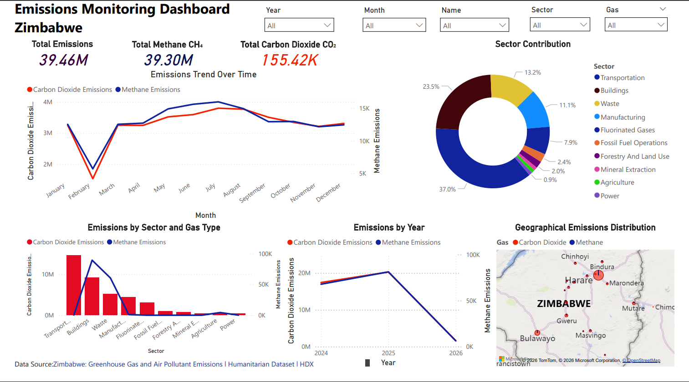

Understanding Emission Trends and Supporting Climate Action

Greenhouse gas emissions are a major driver of climate change, affecting ecosystems, economies, and livelihoods worldwide. Although Zimbabwe contributes a relatively small share of global emissions, the country faces significant climate-related challenges, including droughts, changing rainfall patterns, water scarcity, and reduced agricultural productivity. Understanding the sources, trends, and geographical distribution of emissions is essential for developing effective mitigation and adaptation strategies. This project utilized data analytics and visualization techniques to examine greenhouse gas emissions across Zimbabwe. By analyzing emissions by sector, gas type, location, and time, the study provides valuable insights to support evidence-based environmental planning and climate action.
This project used crime and public safety datasets to identify patterns, trends and risk factors that influence criminal activity and drug-related incidents.
The analysis highlights that carbon dioxide emissions from buildings, transportation, and other energy-intensive activities are the primary contributors to Zimbabwe's greenhouse gas footprint. While the country's overall contribution to global emissions remains relatively small, targeted interventions in high-emission sectors can significantly improve environmental sustainability and climate resilience. The findings demonstrate the importance of leveraging data analytics and visualization tools to uncover hidden patterns, monitor environmental performance, and support informed decision-making. By prioritizing clean energy, sustainable urban development, and improved environmental management, Zimbabwe can strengthen its response to climate change while advancing long-term sustainable development goals.
© 2026 Tendai Davies Makoni. All Rights Reserved.